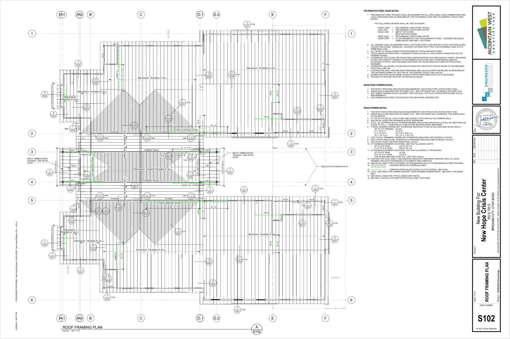
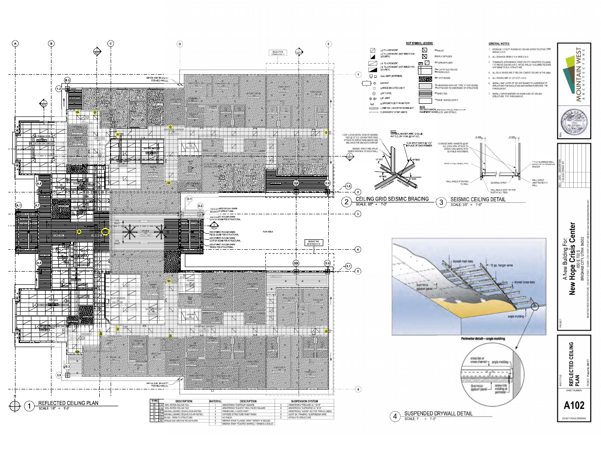
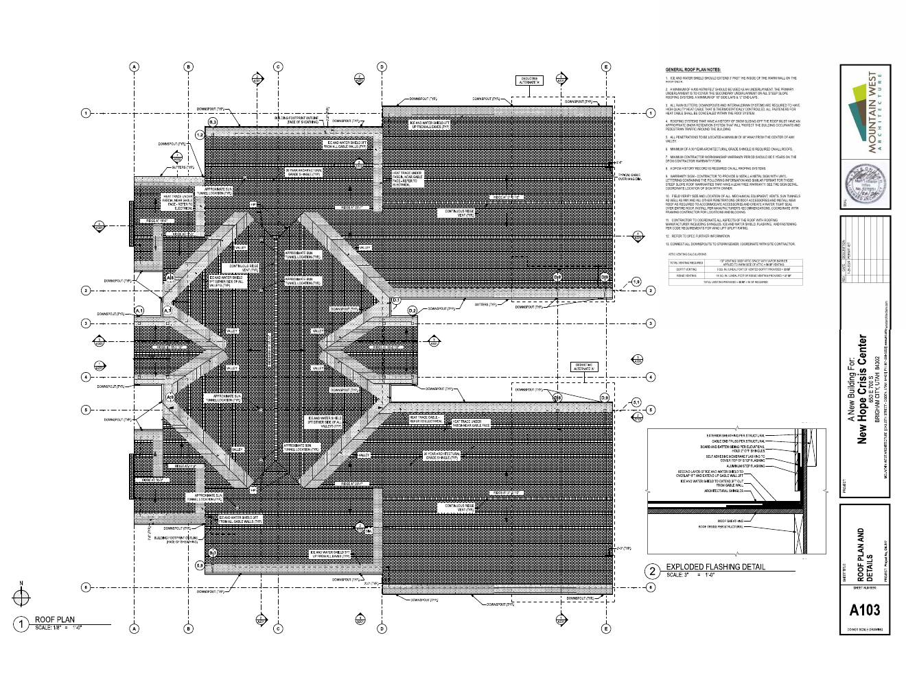
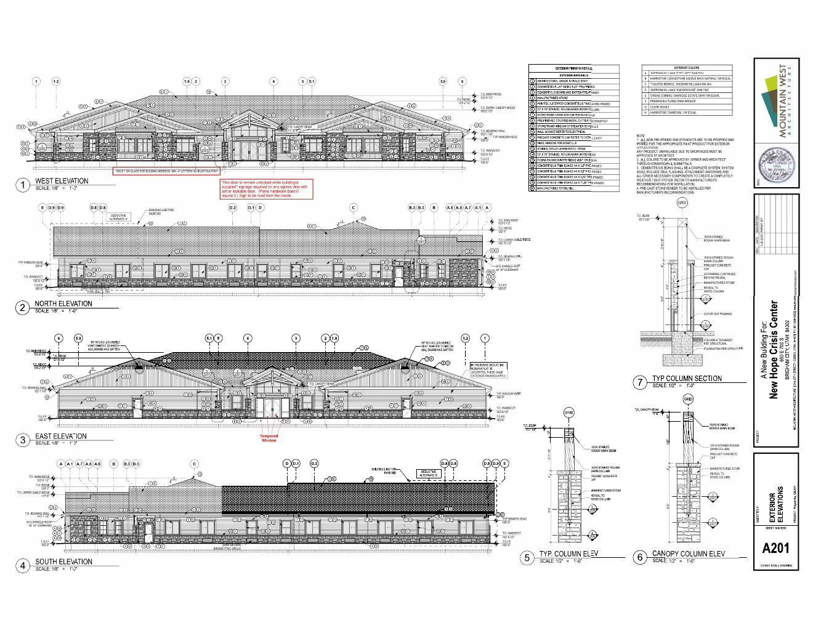
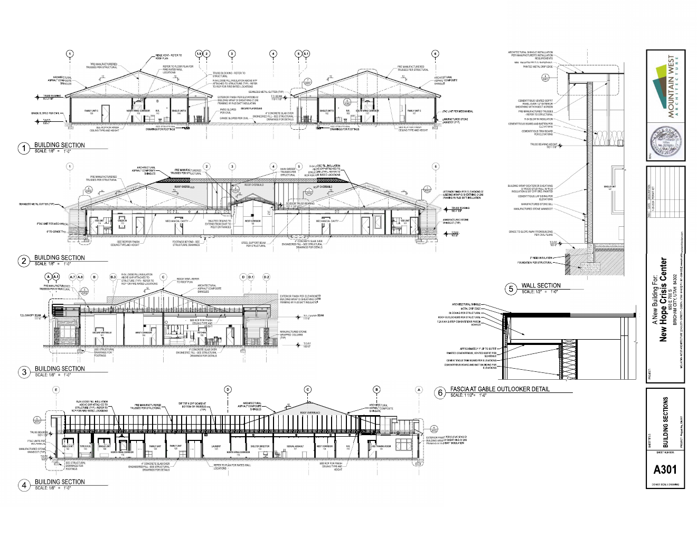
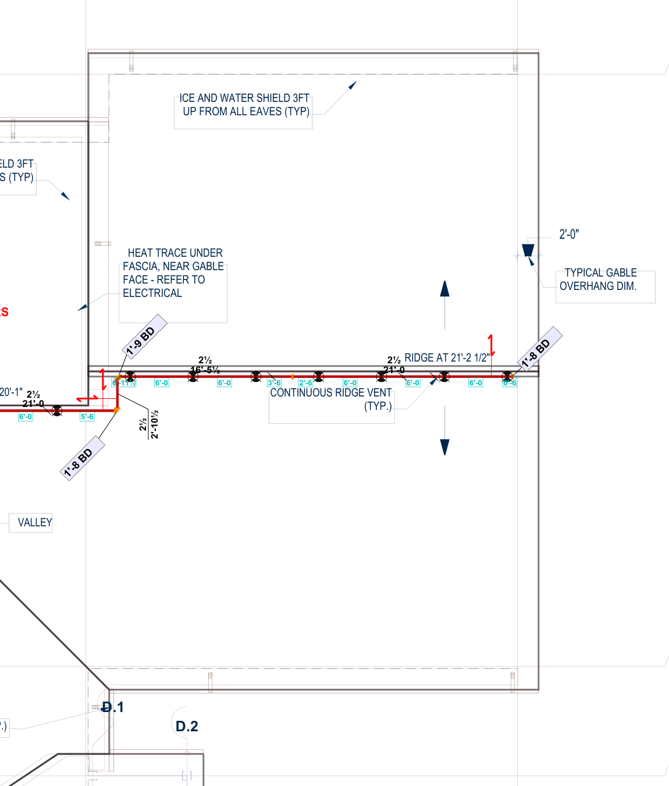
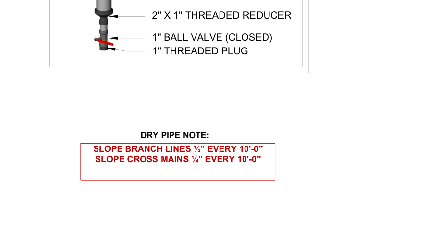
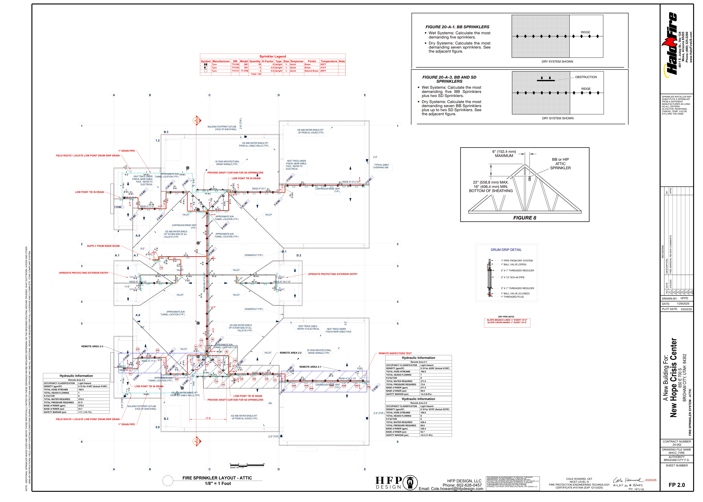

Proper pipe-layout acceptance contract
Complete long-branch drainage profiles
| Branch system | Low point | High terminal | Plan run ft | Required rise in | Absolute pipe Z |
|---|
Mirrored side-branch drainage profiles
| Branch system | Low point | High trunk terminal | Plan run ft | Required rise in | Arm-over status |
|---|
Complete cross-main drainage audit
| Path | High node | Drainage outlet | Plan run ft | Minimum fall in | Calculation endpoint Z |
|---|
Seven-head bounded grade envelope
The intervals below are source-backed feasible ranges, not fabricated exact installation elevations. Selecting one low-end datum fixes all seven deflector elevations; converting deflector Z to pipe centerline Z still requires the exact sprinkler/fitting geometry and obstruction closure.
| Head | Station ft from west low end | Minimum deflector Z ft | Maximum deflector Z ft | Drain catchment | Alternate low-point margin |
|---|
Machine blockers — computed from the source-bound graph
This is the system's acceptance result, not a human review gate. Primary replay, cross-source coverage, and adversarial mutation loops must drive every blocker count to zero on the same project before release.
| Blocking code | What must be source-proved |
|---|
Seven head-to-truss conditional envelopes
Loading sealed calibration...
| Head | Local X ft | S102 X pt | Nearest truss | Centerline distance in | Maximum truss face width preserving 6 in |
|---|

Acceptance boundary
actualPdfUnderlays=true | architecturalSourceRegistrationReady=false | architecturalVerticalControlReady=false | longBranchSourceTopologyReady=false | longBranchLowPointBindingReady=false | longBranchGradeDirectionReady=false | longBranchRelativeGradeProfilesReady=false | sideBranchSourceTopologyReady=false | sideBranchLowPointBindingReady=false | sideBranchLineGradeDirectionReady=false | sideBranchRelativeGradeProfilesReady=false | sideBranchArmOverDrainageReady=false | crossMainSourceTopologyReady=false | crossMainHighPointBindingReady=false | crossMainLowPointBindingReady=false | crossMainRiserReturnReady=false | crossMainGradeDirectionReady=false | crossMainRelativeGradeProfilesReady=false | upperHighPointAbsoluteZReady=false | boundedRidgeBranchPlanPathReady=false | boundedRidgeBranchGradeMagnitudeReady=false | boundedRidgeBranchGradeDirectionReady=false | boundedRidgeBranchDrainCatchmentReady=false | boundedDeflectorGradeEnvelopeReady=false | exactDeflectorElevationsReady=false | exactPipeCenterlineZReady=false | exactDrainRouteReady=false | pipeCenterlineOffsetReady=false | primaryPipeVectorExtractionReady=false | wholeSystemVectorExtractionReady=false | primaryPipeSizeAssignmentReady=false | primaryPipeRoleAssignmentReady=false | operationalReferenceExtractionReady=false | supplySourceAnchorReady=false | lowPointIntentReady=false | drainIntentReady=false | gradeMagnitudeReady=false | approvedRemoteAreaSetReady=false | approvedRemoteAreaHydraulicFlowReady=false | calculationEndpointElevationEvidenceReady=false | route21ExplicitPlanPathReady=false | route22ExplicitPlanPathReady=false | route23ExplicitPlanPathReady=false | wholeFp20HydraulicNodeBindingReady=false | wholeFp20HydraulicFlowReady=false | fieldDrainRouteResolved=false | properPipeLayoutReady=false | wholeFp20GradeDirectionReady=false | endpointElevationsReady=false | complianceReady=false | fabricationReady=false | fieldReleaseReady=false